How to use the Tester of INT222 Assignment 3
1. Start from this link Test basic requirements or the following page:
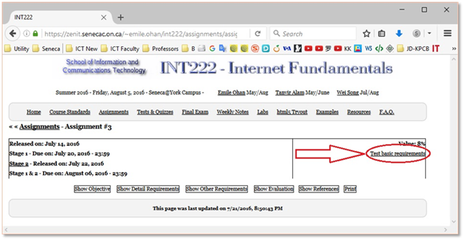
2. Select your zenit account:
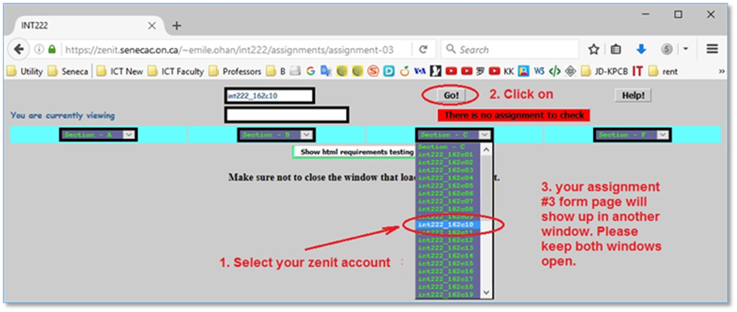
3. Perform the basic tests.
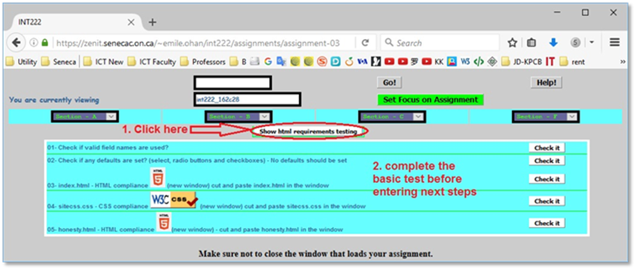
4. Start JavaScript validation test by this link or from the following page:
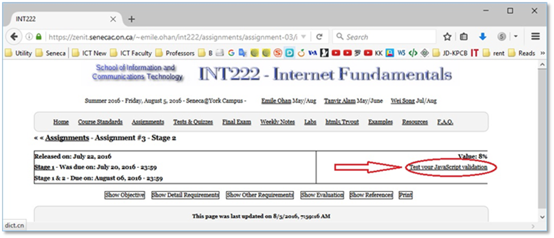
5. Select your zenit account again:
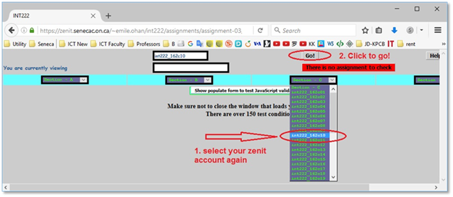
6. The two windows should be as followings:
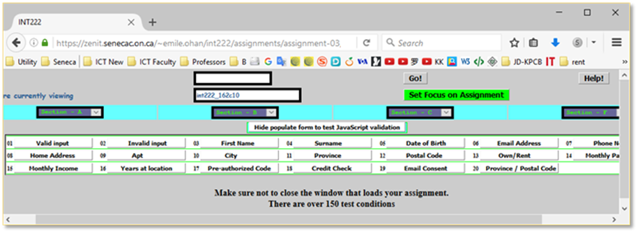
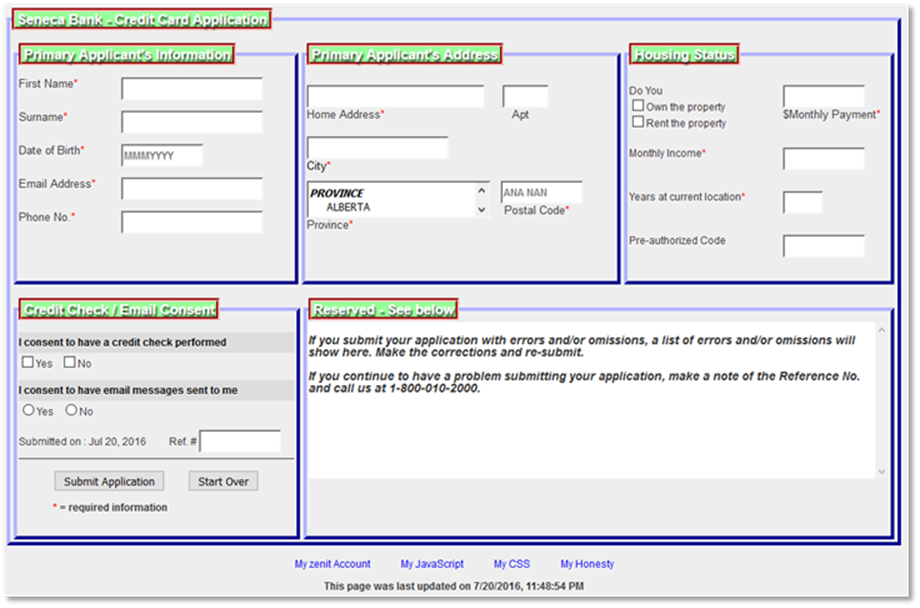
7. Go through the tests items/buttons from 01-Valid input to 20-Province/Postoal Code on the test window.
7.1 Example - invalid data test: click on the 10 City item/button, you’ll get the following window:
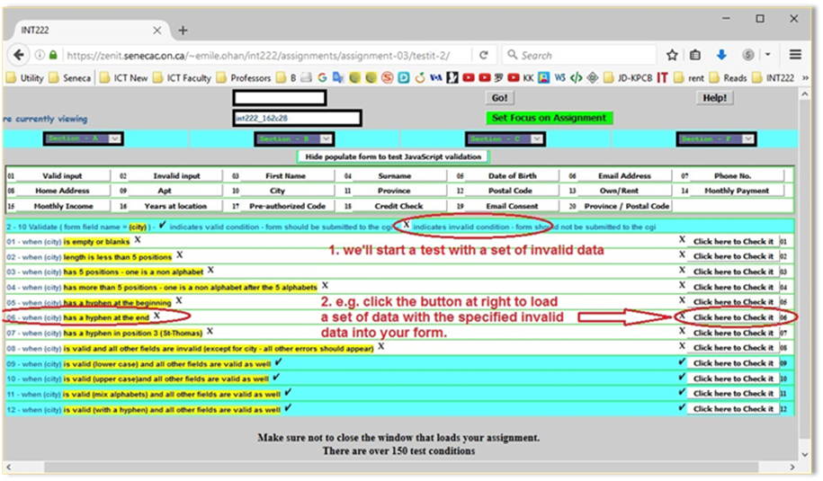
Then you get a set of data in your form page:
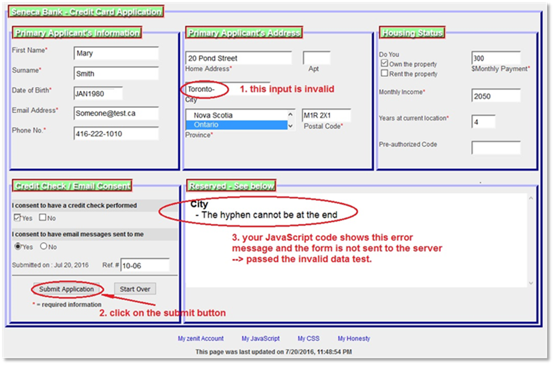
7.2 Example - valid data test: click on the 10 City item/button, you’ll get the following window:
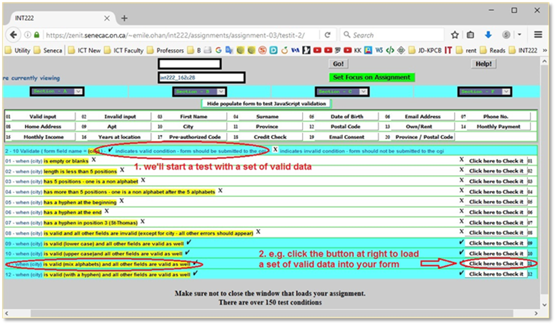
Then your form is filled with data:
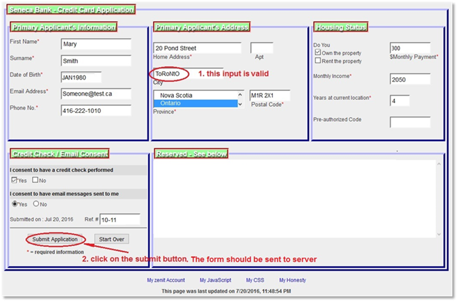
After the form was sent to server:
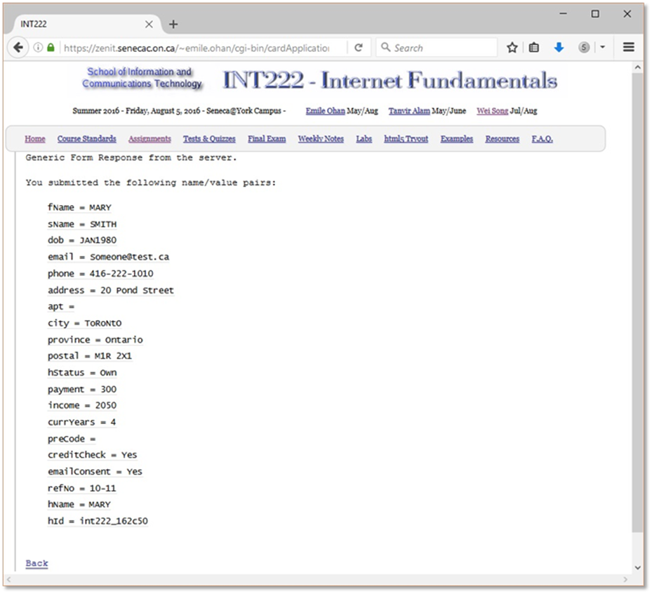